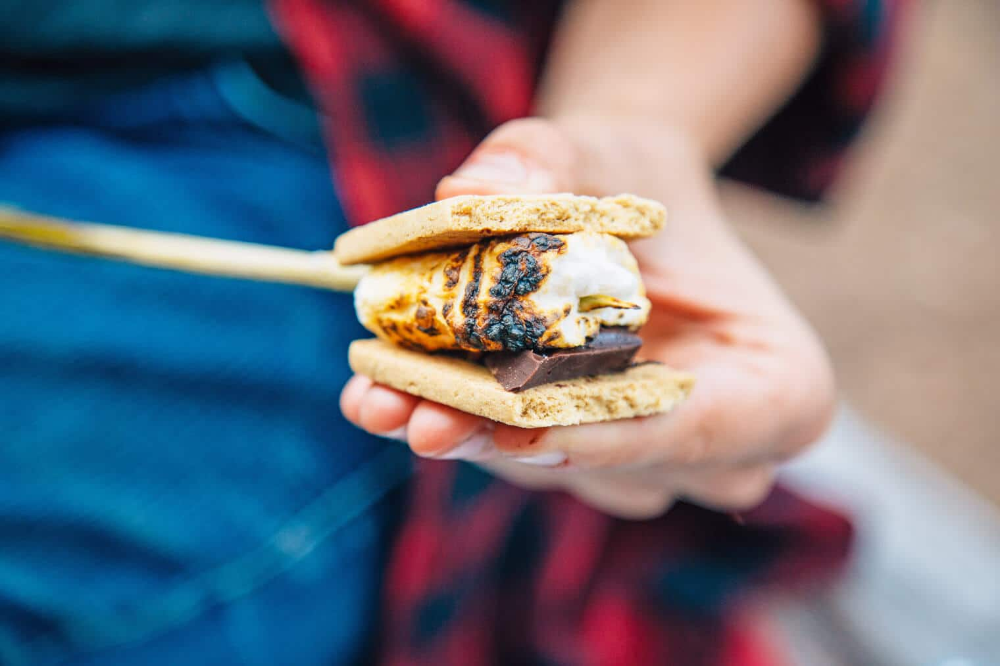

S'mores

No campfire is complete without the infamous s'more. Go on, have s'more.
You'll need a wooden/metal skewer.
Ingredients:
- Graham Crackers
- Marshmallows
- Chocolate Bars
Steps:
- Light your fire. Don't forget to say a few encouraging words.
- Break a graham cracker in half, add chocolate to one half. Doesn't matter which half, but I personally prefer the left.
- Place a marshmallow on a stick and hold it over the heat, rotating often, until the marshmallow is golden brown or burnt, and the inside is gooey.
- Remove the marshmallow from the fire and place it on top of the chocolate. Top the marshmallow with the second graham cracker square. Eat it sandwich style and enjoy a classic treat!
- Back to Home -